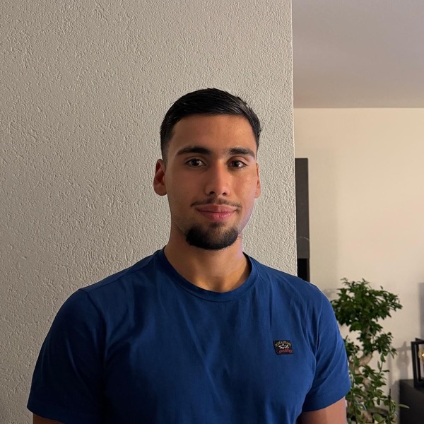

Student software engineering
Hoi, ik ben Erim.
Ik bouw webapplicaties die je meteen kunt gebruiken - van een website voor een echte ondernemer tot een tool die een team dagelijks helpt bij zijn werk.
Over mij
Ik ben student software engineering aan De Haagse Hogeschool. Ik werk het liefst aan projecten waar het resultaat direct zichtbaar is: een site voor een echte ondernemer, of een applicatie die een team elke dag gebruikt.
In teamprojecten werk ik veel met Java. Daarnaast bouw ik zelf webapplicaties met HTML, CSS en JavaScript. Ik vind het belangrijk dat wat ik maak niet alleen werkt, maar ook leesbaar, toegankelijk en uitbreidbaar is.
- Opleiding
Software Engineering, De Haagse Hogeschool - Werkt met
Java, PHP, Python, HTML, CSS, JavaScript, Git - Locatie
Den Haag, Nederland
Waar ik mee werk
-
Front-end
Semantische HTML5, responsive CSS3 en JavaScript. Aandacht voor toegankelijkheid en contrast.
-
Back-end
Java, PHP en Python, plus de basis van databases en het request/response-model achter een webapplicatie.
-
Samenwerken
Git en GitHub voor versiebeheer, werken in sprints en feedback van medestudenten en docenten verwerken.
Waar ik nu mee bezig ben
Ik werk aan een casemanagementplatform voor een Security Operations Center (teamproject in Java) en verbeter ondertussen deze portfoliosite. Daarnaast verdiep ik me in toegankelijkheid en in het schrijven van CSS die makkelijk uit te leggen blijft.
Samen iets bouwen?
Vragen over een project of zin om samen te werken? Ik hoor het graag.